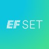

IT- und Cyber-Security-Services
Positionierung, Pain-Point-Analyse und Nutzenkommunikation für erklärungsbedürftige IT- und Security-Services.
Werdegang
Ich bringe Produktmarketing, digitales Marketing und Markenstrategie zusammen, um komplexe Themen klarer, relevanter und nutzbarer zu machen.
Schwerpunkte
Positionierung, Pain-Point-Analyse und Nutzenkommunikation für erklärungsbedürftige IT- und Security-Services.
Produktseiten, Landingpages, SEO, Kampagnen und vertriebsnahe Inhalte als zusammenhängende Customer Journey.
Strukturierte Arbeit an Positionierung, strategischer Kommunikation, Entscheidungsvorlagen und Roadmaps.
Stationen
Produktmarketing für komplexe IT- und Cyber-Security-Lösungen, mit Fokus auf Positionierung, Website-Umsetzung und Leadgenerierung.
Online-Marketing, Website-Optimierung und leadorientierte Kampagnen mit klarer Verbindung von Struktur, Suche und Conversion.
Marken- und Unternehmensstrategien mit analytischer Vorbereitung, klaren Entscheidungsvorlagen und strategischer Kommunikation.
Weitere Erfahrung
Ausbildung
Hochschule für Technik und Wirtschaft des Saarlandes, 2020 bis Dezember 2021, Note 1,1
Hochschule für Technik und Wirtschaft des Saarlandes, 2016 bis 2020, Note 1,6
Weiterbildungen
TÜV SÜD, März 2026. Fokus auf laterale Führung, Verantwortung ohne disziplinarische Rolle und klare Zusammenarbeit.
Haufe Akademie, März 2024. Vertiefung in Suchmaschinenwerbung, Kampagnenstruktur, Steuerung und Performance-Bewertung.
Haufe Akademie, Dezember 2023. Praxisorientierte Arbeit an Google-Ads-Setups, Optimierung und Kampagnenlogik.
Haufe Akademie, November 2023. Verbindung von organischer Sichtbarkeit, bezahlter Suche, Keywordlogik und Website-Performance.

EF SET, November 2023. Nachweis fortgeschrittener Englischkenntnisse für internationale Kommunikation und fachliche Inhalte.
Google Skillshop, November 2023 bis November 2024. Zertifizierung für Suchkampagnen, Anzeigenlogik und Optimierungsgrundlagen.